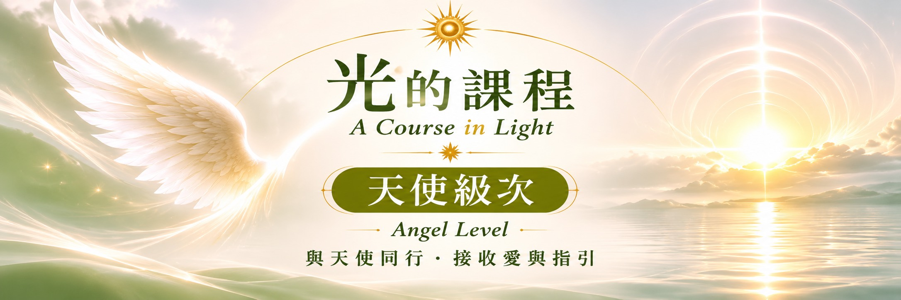

天使一
站回自己的位置
探索我希望如何走進世界，以及如何以真實的自己承擔選擇、展現生命的價值。
學習重點
• 覺察對成就與外在評價的期待
• 看見自己的天賦與生命方向
• 練習以清晰而自在的方式承擔責任
• 將內在信念帶入工作與行動

當我們走過初階的自我覺察，以及行星級次對生命各個面向的探索，天使級次邀請我們將目光從個人的成長，逐漸延伸到生命方向、與他人的連結，以及更深層的內在整合。
透過光的靜心、冥想與日常覺察，在自己的節奏中練習傾聽、接納與信任，讓內在的領悟成為生活裡真實可實踐的選擇。
識層面的連結，也邀請我們將靜心中的理解帶回日常生活。
從生命中的位置，走向與世界的連結，再回到內在的寧靜。
站回自己的位置
探索我希望如何走進世界，以及如何以真實的自己承擔選擇、展現生命的價值。
學習重點
• 覺察對成就與外在評價的期待
• 看見自己的天賦與生命方向
• 練習以清晰而自在的方式承擔責任
• 將內在信念帶入工作與行動
讓自己的光與世界相遇
從個人走向群體，感受人與人之間的支持，探索理想如何在分享與合作中逐步成形。
學習重點
• 認識自己在群體中的位置
• 探索真正想參與創造的未來
• 練習在關係中保有自由與界線
• 將個人願景化為共好的行動
回到內在，與生命和解
在安靜之中看見深藏的感受與習慣，練習放下不再需要的模式，與更寬廣的自己相遇。
學習重點
• 傾聽潛意識與內在細微感受
• 練習接納未知、信任生命節奏
• 整合一路走來的學習與轉變
• 讓靜心與慈悲自然融入日常
不是成為另一個人，而是讓原本就在你心中的光，更自在地走進生命。
✧
信任內在指引
在靜心中辨認自己的感受，讓選擇不再只是來自外界的期待。
✦
在連結中保有自己
帶著真實與愛參與世界，同時尊重自己與他人的界線。
✧
讓覺察走進生活
將靜心時的領悟帶入關係、工作與每一個日常行動
光的課程・學習旅程
每一段旅程都有自己的節奏，不必急著抵達。
初階級次→行星級次→天使級次→單子級次
循序漸進地練習與光連結，讓覺察成為陪伴自己的方式。